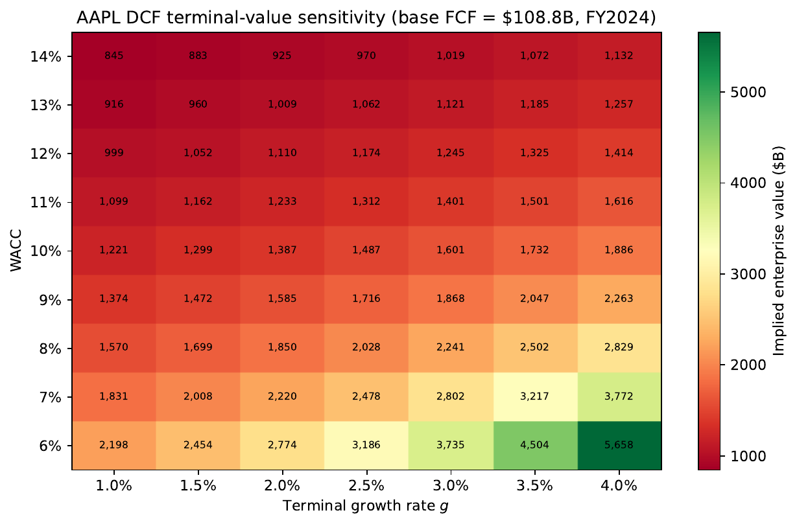

Turning filings into a defensible enterprise value — and knowing exactly which steps to trust the model with.
Juan F. Imbet · Paris Dauphine – PSL University
Summer school · math one click away — press m or click ⚙ "Under the hood"
Roadmap
Where this lecture is going
Valuation frameworks — DCF, multiples, net assets — and where an LLM actually helps.
Getting the data — pulling clean numbers out of SEC filings.
Cash flows — computing and normalising free cash flow.
Forecasting — CoT prompting, few-shot vs. fine-tuning, evaluation.
Tools & arithmetic — why the model must never do the maths itself.
Scenarios, comparables, pipeline, and cost.
the bigger picture
One rule runs through the whole lecture: an LLM is brilliant at reading and reasoning over
text and unreliable at doing the arithmetic. The art is routing each task to the
right tool.
01
Business valuation: frameworks and the LLM opportunity
Three ways to put a number on a company, and where language models change the workflow.
What we are actually computing
What is a business valuation?
Valuation turns financial facts — cash flows, growth, a discount rate — into a single
number: what a rational, fully informed buyer would pay for the claim.
Where this number gets used
M&A — the spread between buyer and seller defines the zone of possible agreement
IPOs — banks produce valuation ranges to price new shares
Portfolio management — model value vs. market price generates trade signals
Litigation, tax, and regulatory capital — transfer pricing, estate tax, fair-value assessments
Why this is hard in the first place
You are pricing the future, not the past
A balance sheet records what a company spent. The market prices what it will earn.
The whole game is turning today's information into a credible forward estimate.
the bigger picture
Valuation is always forward-looking. Translating current information into a credible forward estimate is
exactly where LLMs add the most transformative value — at every step of the analytical chain.
Every assumption is defensible; every assumption is contestable.
Business valuation is the discipline of making assumptions explicit, consistent, and auditable.
Three lenses
Three ways to value a company — and you want all three
Income — DCF
Discount projected free cash flows back to today at the weighted cost of capital. The dominant method for going concerns.
Market — multiples
Apply EV/EBITDA, P/E, P/Book from comparable firms. The hard part is finding genuine peers —
LLMs and embeddings help here.
Asset — net asset value
Sum asset fair values minus liabilities. Best for asset-heavy firms or as a floor cross-check.
in practice
Triangulate across all three and present a valuation range, not a point estimate.
WACC and the cost of equity
The discount rate is itself a model output
WACC is not a market observable — it is derived from the firm's capital structure and the
CAPM estimate of equity cost. The cost of equity is the single most consequential input.
Why this matters for LLM pipelines
β must be estimated from market data — an LLM should retrieve it, not recall it from training
ERP and r_f change over time — stale model knowledge is dangerous here
All computations must go through a code interpreter, never in-context maths
The division of labour
What does an LLM change at each step?
Step
Traditional approach
LLM contribution
Data collection
Manual EDGAR parsing
Automated extraction pipeline
FCF computation
Spreadsheet formulas
Code interpreter (error-free)
FCF normalisation
Analyst reads MD&A
Non-recurring item identification
Forecasting
Analyst judgment
CoT prompting + evaluation
Scenario analysis
Manual scenarios
Narrative coherence checking
Comparable selection
SIC codes + manual
Embedding + LLM hybrid
Report generation
Analyst writing
LLM first-draft synthesis
the key principle
LLMs are most valuable where the task is qualitative reasoning over text, and least reliable
where the task is numerical computation. Route arithmetic to a code interpreter.
02
Extracting financial data from SEC EDGAR
Where the raw numbers live, and how to get them out cleanly.
The source of truth
Everything starts with the filings
U.S. public companies disclose through EDGAR. A handful of filing types carry almost
everything a valuation needs.
XBRL: the first-pass extractor (SEC, 2009)
Since 2009 the SEC requires XBRL tagging, covering most standard line items reliably. The LLM fills
the gap for non-standard layouts, merged cells, and extension elements. Use XBRL as ground truth;
treat LLM extraction as a complement and cross-check.
Engineering details
Getting the pipeline right: rate limits and accession numbers
Automation is straightforward once you understand a few EDGAR conventions
that trip up careless implementations.
Practical engineering points
User-Agent header required — requests that omit it are throttled or blocked.
Rate limit — approximately 10 requests per second; exponential backoff for large-scale jobs.
Accession numbers — format XXXXXXXXXX-YY-ZZZZZZ; strip hyphens to get the directory path in /Archives/.
Look-ahead bias — always record the filing date, not the fiscal year-end date. Using fiscal year-end in a backtest includes information not yet available to investors.
When the table fights back
Why parsing financial tables needs an LLM
Merged cells, multi-level headers, footnotes buried inside cells, non-standard layouts —
classical parsers break on the long tail. An LLM reads the table the way a person would.
Design principles
Request JSON directly — enables automatic validation against a schema
Add "Respond only with valid JSON. No markdown code fences." if the model lacks JSON mode
XBRL as ground truth; LLM extraction fills the gap and acts as cross-check
After extraction: the data model
Assembling a clean, consistent financial data model
Extracting figures from one filing is step one. Assembling them into a schema that can
be safely fed into computation — without silent errors — is step two.
Minimal schema for DCF (3–5 years per company)
Company identifier — ticker and CIK
Fiscal period end date — not all fiscal years end December 31
Filing date — to prevent look-ahead bias in backtests
Standardised quantities — units (thousands vs. millions) and sources clearly annotated
Provenance — XBRL tag or LLM extraction (model + date) for every figure
Restatement flag — a refiled 10-K supersedes the original and may change prior figures
normalisation traps
Currency-unit mismatch (some filers report in thousands, others in millions), fiscal-year offset,
and restatements are the three most common sources of silent downstream errors.
03
Computing free cash flows
The number that goes into the DCF — and the judgment calls that distort it.
Two flavours of cash flow
Free cash flow to the firm, or to equity?
Free cash flow is the cash a business throws off after paying to keep running and grow.
One version belongs to everyone who funded the firm; the other only to shareholders.
which to use?
When leverage is changing materially, FCFF is more robust: WACC can be held constant,
while the cost of equity must be re-levered per scenario when using FCFE.
Numbers on the board
FCFF, worked end to end
A hypothetical software company (USD millions) shows how the pieces combine.
Item
Value (USD M)
Revenue
4,200
EBIT
840
D&A
310
CapEx
180
NWC (current)
620
NWC (prior)
540
Tax rate \(\tau\)
21%
From cash flow to value
With WACC = 9%, 5-yr explicit growth = 8%, terminal growth = 3%:
Enterprise value ≈ $15.2B ≈ 3.6× trailing revenue, consistent with
high-quality software-sector medians for firms with strong near-term growth.
Cleaning the inputs
"Normalising" EBIT: stripping out the noise
Reported EBIT is full of one-off events that won't repeat. Forecasting off the raw number
bakes in distortions. The LLM reads the MD&A and flags what to adjust.
Three categories that distort FCFF
One-time items — restructuring charges, litigation settlements, impairments. Remove from base EBIT.
Capitalised operating leases (IFRS 16, ASC 842) — mismatch between reported EBIT, depreciation, and cash flows; must be reconciled carefully.
Acquired intangible amortisation — from purchase-accounting step-up; often excluded in "cash EBIT" (Koller et al., 2020).
human-in-the-loop design
High confidence → auto-strip. Medium → flag for analyst review. Low → pass through. The LLM
accelerates identification; the analyst makes the final call.
04
Forecasting cash flows with LLMs
Where qualitative information beats pure time-series — if it actually improves accuracy.
The baselines to beat
What classical forecasting can and can't do
Simple statistical models project cash flow from its own past. They're honest baselines —
but blind to anything not already in the numbers.
the key limitation
Pure time-series models rely exclusively on historical values. They ignore management guidance,
industry trends, and macro conditions.
the LLM opportunity
LLMs are trained on disclosures, analyst reports, and economic news — they can fold in qualitative
dimensions time-series models miss. The empirical question: does this measurably improve accuracy?
Make the reasoning visible
Chain-of-thought: force the model to show its work
Wei et al. (2022): prompting the model to reason step by step before answering. For
forecasting, this makes it spell out the causal story — so the output is auditable.
Four-stage CoT forecasting prompt
Macro context — how do rates, GDP, and inflation affect revenue and margins?
Industry dynamics — drivers, headwinds, competition, regulation.
Firm-specific — competitive position; margin trajectory; CapEx plans from MD&A.
Synthesis — point estimate + upside (P90) + downside (P10) per year; 2-sentence justification.
why separating reasoning from numbers matters
If the reasoning says "highly competitive market with stable pricing" but the number says 20% revenue
growth, an automated consistency-checker catches it before the number enters the DCF.
Two adaptation strategies
Few-shot in-context vs. fine-tuning: when to use which
You can teach an LLM the forecasting task without retraining (few-shot) or with supervised
adaptation of its weights (fine-tuning). Each strategy has a different cost–benefit profile.
Few-shot prompting (Brown et al., 2020)
3–10 historical (company, context, forecast) examples prepended to the prompt
Zero training cost; easy to update; deployment flexibility
Include diverse macro environments and industry types to reduce forecast variance
Risk: poorly chosen examples anchor the model to the wrong regime
Fine-tuning and PEFT
Train on labelled (filing, subsequent cash-flow realisation) pairs — captures domain-specific patterns (e.g., MD&A language and earnings surprises)
LLM signals carry return-predictive information even without fine-tuning (López-Lira and Tang, 2023)
LoRA / PEFT (Hu et al., 2022): train only a small fraction of parameters — competitive performance at a fraction of the compute cost
practical recommendation
Start with few-shot; fine-tune only if the sector has non-standard accounting conventions or you need
calibrated uncertainty estimates. LoRA makes fine-tuning feasible even without large-scale GPU clusters.
Did it actually work?
How to grade a forecast
Three metrics, each answering a different question: how far off, how far off in dollars,
and did we at least get the direction right.
Metric
Problem
When most useful
MAPE
Undefined when \(y_t \approx 0\)
Stable, positive cash flows
RMSE
Scale-dependent
Within-company comparison
DA
Scale-invariant
Investment-decision relevance
the discipline
Always compare against a random-walk baseline and sell-side analyst consensus (Zhang et al., 2024).
05
Tool-augmented agents for financial arithmetic
The single most important rule in this lecture: never let the LLM do the maths.
A structural problem, not a prompting one
Why you can't trust an LLM with arithmetic
An LLM predicts the next word. Arithmetic is a deterministic algorithm. It can pattern-match
simple sums, but reliability collapses as the computation grows.
For valuation, this is serious
A 5-year DCF involves approximately 15–20 chained arithmetic operations
An incorrectly applied tax rate propagates through every calculation
Final valuation error can be several times the original computational error
the rule
No financial calculation — however simple — should be performed by in-context LLM reasoning. Remove
arithmetic from the LLM entirely and route all computation to a deterministic executor.
The pattern that fixes it
The agent reasons; the code interpreter computes
Toolformer (Schick et al., 2023) showed models can learn when to call external tools.
A ReAct agent (Yao et al., 2022) emits Thought / Action / Observation steps, delegating every number
to a Python executor.
# ReAct agent trace — DCF computation (Yao et al., 2022)
Thought 1: I need to compute FCFF. EBIT=840, DA=310, CapEx=180,
delta_NWC=80, tau=0.21. Use python_executor.
Action 1: python_executor(code="""
ebit=840; da=310; capex=180; delta_nwc=80; tau=0.21
fcff = ebit*(1-tau) + da - capex - delta_nwc
print(f"FCFF = {fcff:.1f} M")
""")
Observation 1: FCFF = 713.6 M
Why this is the right design
Arithmetic is delegated to python_executor rather than performed
in-context — and the generated code is an auditable artefact a human can inspect.
The pattern that fixes it · continued
The same trace finishes the DCF
Step two chains the cash flows into a full discounted valuation — again, entirely in code.
Thought 2: Now compute the 5-year DCF with g=8%, g_term=3%, WACC=9%.
Action 2: python_executor(code="""
import numpy as np
fcff0=713.6; g=0.08; g_t=0.03; wacc=0.09; n=5
fcfs=[fcff0*(1+g)**t for t in range(1,n+1)]
tv=fcfs[-1]*(1+g_t)/(wacc-g_t)
ev=sum(f/(1+wacc)**t for t,f in enumerate(fcfs,1))+tv/(1+wacc)**n
print(f"EV = {ev:.1f} M")
""")
Observation 2: EV = 15224.0 M
the deliverable is the code
Generated code is an auditable artefact: human reviewers inspect it to verify formula, inputs, and units.
Know your enemy
Four ways an LLM will sabotage a valuation
1 · Phantom tickers
Realistic-sounding but non-existent tickers or company names. Mitigation: validate every
ticker against a securities master (e.g., the EDGAR company search API) before use.
2 · Invented ratios
Confabulated numbers in no filing. Mitigation: trace every figure to a specific EDGAR
accession number — do not trust until verified (Zhang et al., 2024).
3 · Misapplied formulas
Correct code, wrong formula (FCFE when FCFF was asked; missing tax shield on interest).
Mitigation: automated formula-level testing against known benchmark cases.
4 · Stale knowledge
Models have a knowledge cutoff; tax rates and accounting standards change.
Mitigation: prefer EDGAR-retrieved facts over parametric model memory.
06
Scenario analysis and Monte Carlo
A single number hides the risk. Show the distribution.
Three coherent stories
Bull, base, bear — and why each must hang together
Build three internally consistent worlds. The danger isn't optimism or pessimism — it's a
scenario whose pieces contradict each other.
Adverse macro, margin compression, or competitive deterioration
Every scenario must specify a complete, consistent set: revenue growth, EBIT margins,
CapEx intensity, NWC ratios, terminal growth rate.
A scenario combining 25% revenue CAGR and 1% terminal growth is internally contradictory
— rapid-growth corporations rarely decelerate to near-zero growth abruptly.
the LLM's job here
LLMs excel at narrative coherence checking — does the story justify the numbers? — and
generate the investment write-up paragraph. They should not compute the resulting valuations.
From three points to a full picture
Monte Carlo: the whole distribution of value
Instead of three hand-built cases, draw thousands of WACC and growth values from
distributions and re-run the DCF each time. The output is a range, not a point.
Output: mean, median, standard deviation, and P10 / P25 / P75 / P90 of
the EV distribution — a quantified uncertainty that a point estimate conceals.
why Monte Carlo is not optional
A 100-bps error in terminal growth produces a 15–18% error in enterprise value.
Point estimates aren't just imprecise — they're misleading.
Sensitivity analysis
The WACC–growth spread dominates enterprise value
A sensitivity heatmap makes the non-linearity tangible: small changes near the lower-right
corner — where the discount-rate minus growth-rate spread is smallest — swing enterprise value sharply.

Figure. DCF terminal-value sensitivity heatmap for Apple Inc. (AAPL). Each cell shows
the implied enterprise value (billions USD) from the Gordon Growth formula
\(\text{EV} = \text{FCF}(1+g)/(\text{WACC}-g)\), evaluated at AAPL's FY2024 free cash flow.
Colour encodes value on a green (high) to red (low) scale.
Note: the 10-K reports FCF of $108.8B; the yfinance API returns $98.8B for the same period —
a data-vendor discrepancy that illustrates why sourcing inputs from primary filings matters.
Source: Generated deterministically from AAPL FY2024 10-K via
gen_dcf_sensitivity.py; WACC ∈ [6%, 14%], g ∈ [1%, 4%].
07
Comparable selection
Finding genuine peers — the place SIC codes fail and embeddings shine.
Why the old way breaks
The trouble with picking comparables
Multiples are only as good as the peer set. The traditional tools for choosing peers are
decades out of date and riddled with well-documented pitfalls.
Traditional approach and its pitfalls
Industry codes (SIC, GICS, NAICS) + size filter (0.3–3.0× revenue or market cap): simple, but SIC codes were last revised in 1987. A cloud-computing firm and a 1990s software distributor share a code.
Diversified conglomerates — a "manufacturing" SIC firm deriving revenue from financial services; its multiples are uninformative for a pure-play manufacturer.
Cyclical timing — temporarily distressed firms depress the median multiple and undervalue the target.
prompt-based selection — the catch
Describe the target and ask for 8–12 comparable firms. Easy, broad world knowledge — but
hallucinated tickers occur with non-trivial frequency.
Validating every ticker against a securities master is mandatory in production.
The grounded alternative
Embedding-based peers: every candidate is real
Turn each company's MD&A into a dense vector and retrieve the closest ones.
Because candidates come from actual filings, no ticker can be hallucinated.
the trade-off
Embeddings are grounded — every retrieved peer is a real firm — but may surface textual lookalikes
with similar MD&A boilerplate whose business model actually differs from the target.
Best of both
The hybrid pipeline: retrieve, then reason
Neither approach alone is enough. Combine grounded retrieval with qualitative filtering —
each used only for what it's good at.
Two-stage hybrid
Candidate generation — the embedding index returns the top 30 by cosine similarity (large enough to capture genuine peers).
LLM filtering — the model receives candidates + brief descriptions and removes firms that are geographically incomparable, in different competitive positions, or hit by idiosyncratic events (pending acquisition, bankruptcy). Filtered set of 8–12 comparables proceeds to multiple analysis.
confine the LLM to its strengths
Stage 1 is grounded retrieval — no hallucination risk. Stage 2 is business-model reasoning, where the
LLM excels. Stage 2 never needs to recall whether a ticker exists — Stage 1 already guaranteed it.
08
End-to-end pipeline: cost, error, and best practices
Where errors compound, what it costs to run at scale, and the rules that keep a production system honest.
Where the uncertainty really lives
One input dominates the error in your valuation
Errors flow through a multi-step pipeline. First-order sensitivity analysis shows that
one input swamps the rest: the terminal growth rate.
≈1%
EV error from a 1% FCF extraction error
15–18%
EV error from a 100-bps terminal-growth error
the dominant uncertainty source
Terminal-growth uncertainty dominates enterprise-value uncertainty. Always run Monte Carlo;
always present percentile ranges rather than a point estimate.
How accurate, and what does it cost?
Benchmarking and unit economics at scale
A production pipeline must be evaluated on accuracy and unit economics before
deploying across a large coverage universe.
Accuracy benchmarks (Zhang et al., 2024)
MAVE (mean absolute valuation error): comparable to the spread between analyst price targets and realised prices — accuracy ceiling is set by unpredictable future cash flows, not the engine
Coverage rate: above 90% for large-cap companies; above 75% for smaller companies where filings are less standardised
Directional accuracy: fraction of cases directionally consistent with analyst consensus
Token costs and latency
A typical 10-K: ≈50,000 tokens; extraction context 3,000–8,000 tokens per call
≈$1–$5 per company at 2024 frontier-model prices (verify current rates at provider pricing pages)
3,000 companies refreshed quarterly → ≈$3,000–$15,000 per quarter
Latency: with parallelised calls, end-to-end ≈ tens of seconds per company
The rules of the road
Five best practices for production deployment
XBRL first — verify extracted numbers against XBRL tags; flag any conflict. LLM extraction is a complement, not a sole source.
Code interpreter for all arithmetic — no calculation in-context; the generated code is the deliverable and the audit trail.
Run Monte Carlo — a point-estimate DCF is misleading; communicate the P10–P90 range.
Mandatory hallucination guards — validate every ticker; trace every figure to an EDGAR accession number; suppress unverifiable claims.
Human review before publication — the LLM is a powerful assistant, not an autonomous decision-maker. A qualified analyst owns the figures.
governance anchor (FSB, 2023)
Consistent with FSB (2023) guidance on AI in finance: human accountability, model transparency, and
robust back-testing are prerequisites for responsible deployment.
Wrap-up
What we covered — and where Lecture 6 goes
The LLM-assisted valuation stack
Component
Key mechanism
Data extraction
EDGAR API + LLM table parsing + XBRL validation
FCF computation
Code interpreter (deterministic, auditable)
Normalisation
LLM reads MD&A; human reviews high-confidence flags
Forecasting
CoT prompting; few-shot or LoRA; MAPE / RMSE / DA
Scenarios
Bull/base/bear + Monte Carlo over WACC and \(g\)
Comparables
Embedding index + LLM qualitative filter (8–12 peers)
HITL review; hallucination guards; full audit trail
Lecture 6 — Credit Risk
Connection
The same data-extraction and forecasting tools, now applied to credit risk — where the targets are
probability of default and loss given default, and regulatory constraints on model transparency are
stricter.
Key refs: Wei et al. (2022) · López-Lira & Tang (2023) ·
Hu et al. (2022) · FSB (2023) · IFRS 13 / ASC 820 · IFRS 16 / ASC 842 ·
Damodaran (2012) · Zhang et al. (2024).
A
Appendix — case studies, orchestration, and reference tables
A full SaaS valuation, the AAPL companion exercise, the multi-agent architecture, and the discount-rate mapping.
Appendix · case study
A mid-cap SaaS company, valued three ways
A stylised mid-cap US cloud software firm based on a composite of publicly available filings
(specific company names and figures are illustrative).
Comparables (9 peers, median EV/EBITDA 24.5×, EBITDA $1.22B)
$29.9B
—
Monte Carlo (10,000 draws, σ_WACC = 1.5%, σ_g = 1%)
Mean $17.2B · P10–P90 $12.5B–$24.1B. The range quantifies the uncertainty a point estimate conceals.
The DCF-vs-comparables gap reflects a sector trading at elevated growth multiples.
Appendix · case study — FCF projections
CoT-generated cash-flow paths for the SaaS case
The CoT forecasting prompt, seeded with historical FCFF and the MD&A summary,
returns these base, upside, and bear projections (USD millions).
Year
Base
Upside
Bear
1
868
940
760
2
947
1,050
820
3
1,025
1,170
870
4
1,100
1,280
900
5
1,170
1,385
920
internal consistency check
The upside path implies near-linear FCF growth; the bear path implies margin compression and slowing reinvestment.
A consistency-checking agent reviews both narratives before numbers enter the DCF.
Appendix · AAPL companion exercise
How close can a sub-agent pipeline get to the market price?
A complete, agent-orchestrated valuation of Apple Inc. (AAPL) at its FY2024 close
(28 September 2024) illustrates how all components connect — and where data-vendor discrepancies emerge.
Valuation results
FCF from primary 10-K: $108.8B vs. $98.8B from yfinance API — a routine data-vendor gap; primary filings are the authoritative source
Two-stage DCF → intrinsic ≈ $225/share
EV/EBITDA cross-check → ≈ $217/share
50/50 triangulation → $221.04/share — within 2.6% of the $226.84 market price (inside ±10% tolerance)
the exercise question
The pipeline comes within 2.6% of the market price — but is that accuracy due to the model, or does
the ±10% tolerance just happen to accommodate the estimate? Test by injecting the yfinance FCF error
and measuring how far the triangulated estimate moves.
Appendix · architecture
Why a multi-agent orchestrator beats one big script
A monolithic pipeline reruns everything when step 6 fails and is untestable in parts. Split
it into an orchestrator plus independently testable specialists.
Orchestrator + specialists
edgar_agent — retrieval and extraction
fcf_agent — computation and normalisation
forecast_agent — CoT projections
comps_agent — comparable selection
dcf_agent — final valuation and scenario synthesis
Parallelism and data contracts
Comparable selection has no dependency on the FCF forecast — both run concurrently, cutting latency.
A shared valuation state dictionary with Pydantic-validated schemas provides full provenance for the
final output.
production latency
6 LLM calls × 1–5 s each, with parallelisation ≈ 15–30 seconds per company.
Cost: ≈$1–$5 per company at 2024 frontier-model pricing (prices change; verify at provider pages).
Appendix · reference
FCFF vs. FCFE: which rate discounts which cash flow
The two free-cash-flow definitions are discounted at different rates and yield different
value measures. Choose based on capital-structure stability.
Metric
Discounted at
Yields
When to use
FCFF
WACC
Enterprise value
Stable or changing leverage
FCFE
Cost of equity
Equity value directly
Stable leverage only
Discounting FCFF at WACC gives enterprise value; subtract net debt to recover equity value.
Discounting FCFE at the cost of equity yields equity value directly.
When capital structure is changing materially, FCFF is more robust because WACC can be held constant
while the cost of equity must be re-levered per scenario (Damodaran, 2012).